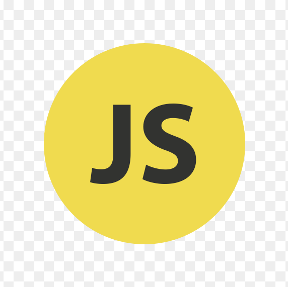

Rafiif's Website
Beranda
Kampusku
Kotaku
Profile
Selamat Datang
Selamat datang di Rafiif's Website yang saya tujukan untuk seluruh pengunjung yang dapat mengakses seluruh informasi tentang profil dari Nurafiif Almas Azhari. Tentunya dalam penyajian informasi masih banyak kekurangan, oleh karena itu kepada dosen dapat memberikan saran dan kritik demi kemajuan WEB.
Web ini saya buat guna memenuhitugas dari mata kuliah Praktik Pemrogramman Web, selain itu sebagai sarana belajar atau latihan mahasiswa dalam membuat suatu website.
HTML
HTML atau
Hypertext Markup Language
merupakan bahasa markup yang digunakan untuk membuat struktur halaman website. HTML terdiri dari kombinasi teks dan simbol yang disimpan dalam sebuah file. Selain itu adapun standar atau format khusus yang harus diikuti telah tertuang dalam standar kode internasional atau ASCII. Dengan adanya HTML, pengguna dapat membuat atau menyusun heading, paragraf, gambar, link, dan lainnya supaya dapat dilihat banyak orang melalui halaman website.
CSS
CSS adalah bahasa Cascading Style Sheet dan biasanya digunakan untuk mengatur tampilan elemen yang tertulis dalam bahasa markup, contohnya HTML. CSS berfungsi untuk memisahkan konten dari tampilan visualnya di situs. HTML dan CSS memiliki keterikatan yang erat. Karena HTML adalah bahasa markup (fondasi situs) dan CSS memperbaiki style (untuk semua aspek yang terkait dengan tampilan website), maka kedua bahasa pemrograman ini harus berjalan beriringan.
JavaScript

JavaScript adalah bahasa pemrograman yang digunakan dalam pengembangan website agar lebih dinamis dan interaktif. Kalau sebelumnya kamu hanya mengenal HTML dan CSS, nah sekarang kamu jadi tahu bahwa JavaScript dapat meningkatkan fungsionalitas pada halaman web. Bahkan dengan JavaScript ini kamu bisa membuat aplikasi, tools, atau bahkan game pada web. JavaScript merupakan bahasa pemrograman jenis interpreter, sehingga kamu tidak memerlukan compiler untuk menjalankannya